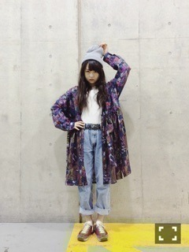
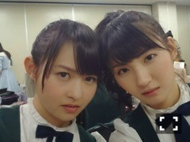
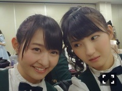
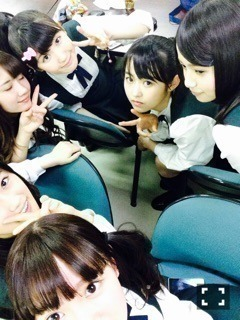
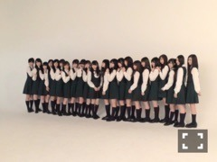

| 2015/02 03 Tue | 伊藤万理華 物を燃やした際。625 回目 |

東京ビックサイトでの握手会
4部5部中止になってしまって
すみませんでした。
大事な時期に体調を
崩してしまって情けないです。
なによりわざわざ遠くから
来てくださった方に申し訳ないです。
来てくださった方が
楽しんでもらえるように
体調万全にして握手会に臨みます！
お手数ですが握手券振替
よろしくお願いします。


のぎ天 文芸サークル後半戦
新内畠中中元、私のチームで
監督をやらせていただきました！
なによりこの企画ですね、、
私がずっと乃木坂浪漫をまたやりたい
とスタッフさんに言い続けた結果、
叶ったものなのです。
サークルというかたちで、
監督もメンバーでしないと
いけないという条件付でしたが
私にとってはとても嬉しい考案！
スタッフさん
ありがとうございました。
収録時今まで見た中でいちばん
生き生きしていると言われたよ！！
部長とは違ったはしゃぎ方。
構成の編集までどうしても
こだわりたくて別日に
まいちゅんとやらせて
いただきました。
素人なりに精一杯編集しました。
自分ではかなりのカットを
撮ったつもりだったのに
まったく足りなかったりと、
編集の難しさを知りました。
少しでも監督という気持ちになれた！
モニターとにらめっこしてたけど、
やっぱり可愛いです。
とにかくみんな可愛かったです。
これからも映像作品に
何かしら関わりたい。
遅くなりましたが、
「ニッポン放送 LIVE EXPO TOKYO 2015 ALL LIVE NIPPON VOL.3」
来てくださったみなさん
ありがとうございました！
アルバム曲 自由の彼方
初披露しました！
緊張のトップバッターでしたが、
声援に支えられて無事終了。

貴重な経験ができて良かったです！
外のイベントに出演することは
1年前は想像してなかったので
とても感慨深いです。
今後もいろんなイベントに
出演できたらいいな。
アンダーメンバーと言わず
乃木坂46として。

引き続き11枚目制作がんばる！
まりか